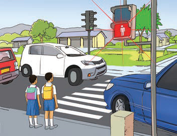
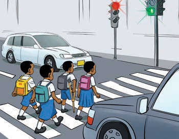
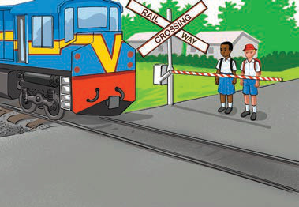
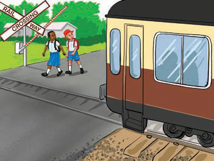
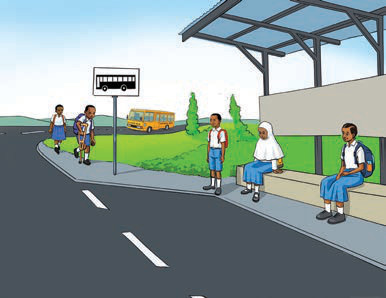
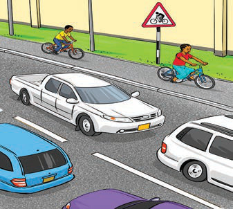
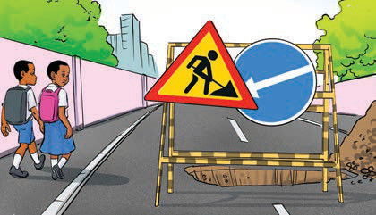

Observe the following pictures and answer the questions that follow.
1.(a)Two children wait at the zebra crossing while the pedestrian light is red and cars pass.

(b)Children cross the road on the zebra crossing when the light is green.

2.(a)Two pupils wait at the railway crossing while the barrier is down and the train passes.

(b)Two pupils cross the railway line after the train has passed.

3.Children wait safely at the bus stop as a bus comes down the road.

4.Cars drive on the road while two people ride bicycles near a bicycle warning sign.

5.Two children walk past roadwork signs and a hole in the road.
